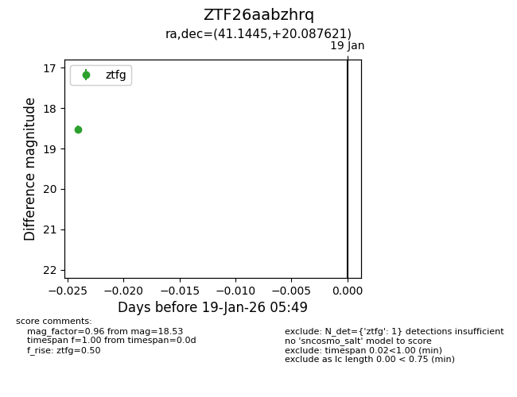
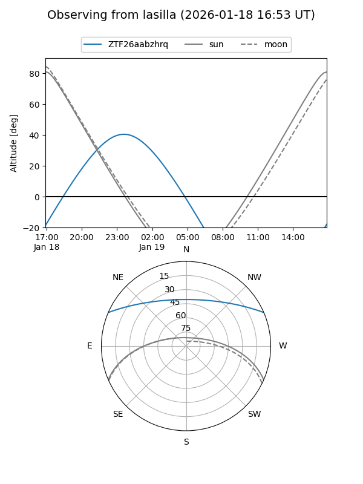
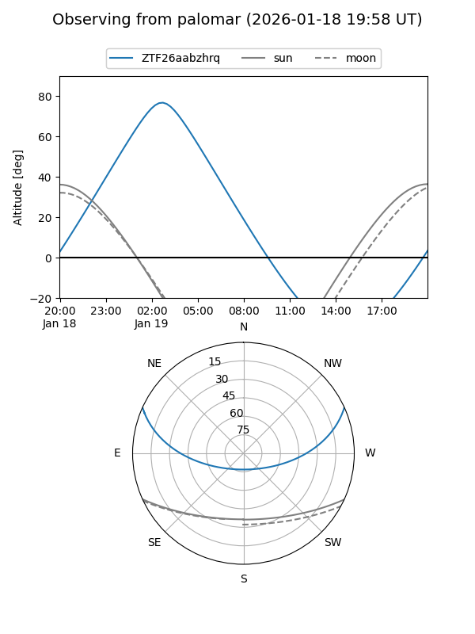

ZTF26aabzhrq
Target ZTF26aabzhrq at 2026-01-19 07:31
Aliases and brokers:
FINK: link
Lasair: link
ALeRCE: link
alt names
ZTF26aabzhrq (ztf,fink_ztf)
Coordinates:
equatorial (ra, dec) = 41.1445,+20.08762
equatorial (HMS+DMS) = 02:44:34.69,+20:05:15.43
galactic (l, b) = (156.0278,-35.41106)
Flags:
Photometry:
last ztfg=18.53, ztfr=18.58
1 ztfg, 1 ztfr detections
Lightcurve

Visibility


Additional plots